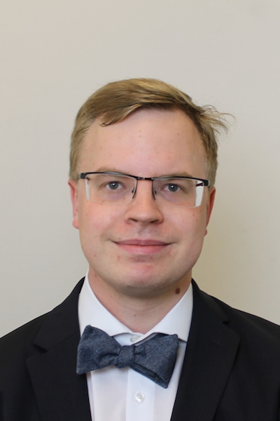

About me
 Ciao! You have reached the homepage of Vesa Kaarnioja. I completed my doctorate in mathematics at Aalto University in August 2017. I am currently working as an Associate Professor with the Applied Mathematics group at LUT University. I am also an Adjunct Associate Lecturer at the University of New South Wales.
I have previously worked as a Substitute Professor of Numerical Mathematics at the University of Potsdam (summer 2024). I have also worked as a postdoc with the Numerical Analysis of Stochastic and Deterministic Partial Differential Equations group at the Free University of Berlin (2022-2025), Uncertainty Quantification and Inverse Problems group at LUT University (2020-2022), Computational Mathematics group at the University of New South Wales (2018-2020), Applied Mathematics and Mechanics group at Aalto University (fall 2018), and with the Inverse Problems group at the University of Helsinki (2017-2018).
I am a member of FIPS.
My research interests include high-dimensional integration and interpolation using sparse grids and quasi-Monte Carlo methods, inverse problems, semilattices, and number theory (especially arithmetic functions!).
Education- Doctor’s degree in mathematics, Aalto University, Department of Mathematics and Systems Analysis, 2017.
- Master’s degree in applied mathematics, University of Helsinki, Department of Mathematics and Statistics, 2013.
- Bachelor’s degree in mathematics, University of Helsinki, Department of Mathematics and Statistics, 2012.